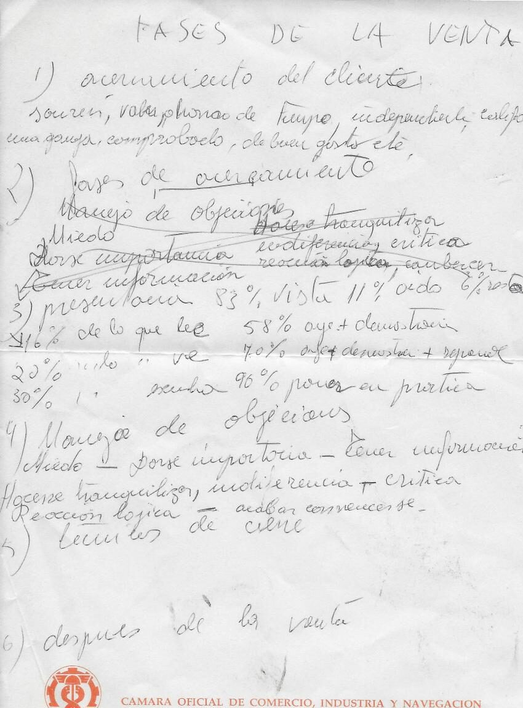
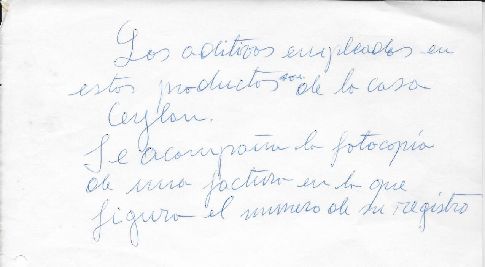

Portada / El oficio
Lo que no es receta
El oficio
Fases de la venta
Apuntes a bolígrafo en una hoja con membrete de la Cámara Oficial de Comercio, Industria y Navegación de Castellón.


Lo que se lee
- Acercamiento del cliente. [sigue una línea por transcribir]
- Fases de acercamiento.
- Presentación: 83 % vista, 11 % oído… [porcentajes de lo que se lee, se oye y se ve, por transcribir]
- Manejo de objeciones: miedo, darse importancia, tener información; hacerse tranquilizar, indiferencia, crítica; reacción lógica, acabar convenciéndose.
- [por transcribir] de cierre.
- Después de la venta.
Letra rápida y con tachaduras: esta lectura es un primer intento y hay que revisarla con el original delante.
Los aditivos
Una nota suelta en tinta azul, como las fórmulas de las recetas, que remite a la casa de especias.


Transcripción
«Los aditivos empleados en estos productos son de la casa Ceylan. Se acompaña la fotocopia de una factura en la que figura el número de su registro.»
La factura no está entre los papeles escaneados. Las etiquetas de la casa están en Etiquetas.